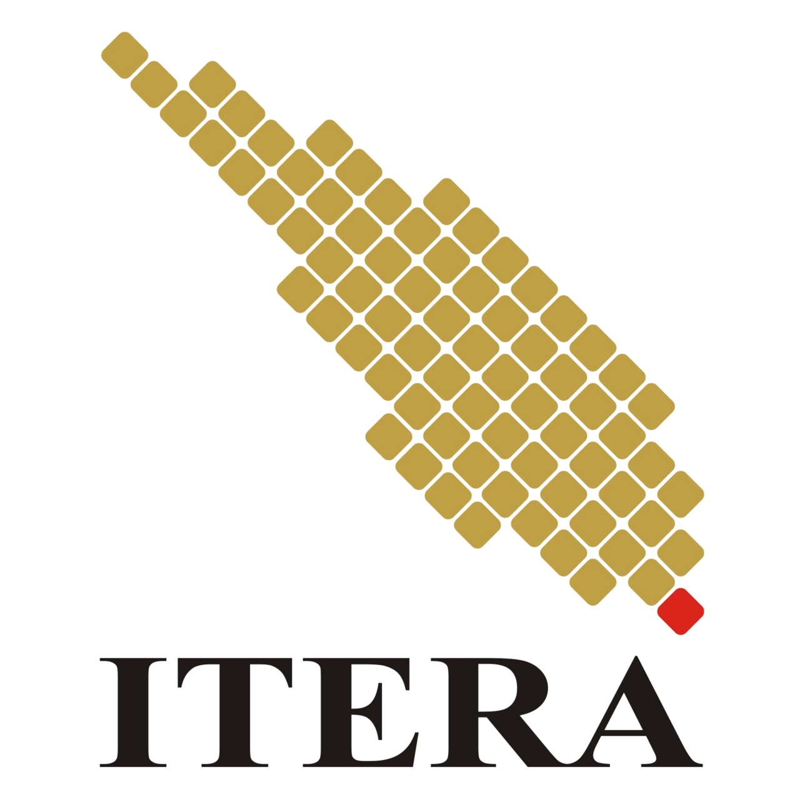

Sejarah Singkat
Institut Teknologi Sumatera (ITERA) adalah perguruan tinggi negeri yang berlokasi di Lampung Selatan. ITERA didirikan sebagai bagian dari program pemerataan pendidikan tinggi berbasis teknologi di Pulau Sumatera.

Kampus Unggulan di Pulau Sumatera
Institut Teknologi Sumatera (ITERA) adalah perguruan tinggi negeri yang berlokasi di Lampung Selatan. ITERA didirikan sebagai bagian dari program pemerataan pendidikan tinggi berbasis teknologi di Pulau Sumatera.
Menjadi perguruan tinggi unggul dan mandiri yang memandu perubahan melalui pemberdayaan potensi Sumatera.
Mengembangkan pendidikan, penelitian, dan pengabdian masyarakat untuk memberdayakan potensi wilayah di bidang sains, teknologi, seni, dan ilmu kemanusiaan.
Berikut adalah beberapa fakultas yang ada di ITERA beserta jumlah program studinya.
| No | Nama Fakultas | Jumlah Program Studi |
|---|---|---|
| 1 | Fakultas Teknologi Infrastruktur dan Kewilayahan (FTIK) | 11 |
| 2 | Fakultas Teknologi Industri (FTI) | 21 |
| 4 | Fakultas Sains (FS) | 9 |
Observatorium Astronomi Itera Lampung (OAIL) berkolaborasi dengan jejaring observatorium di seluruh Indonesia, termasuk Observatorium Bosscha, Bandung, melakukan pengamatan fenomena astronomi okultasi Venus oleh Bulan pada malam ini, Senin, 14 September 2026. Di Lampung, kegiatan pengamatan dilaksanakan di rooftop Gedung Kuliah Umum 2 Kampus Itera.
Mahasiswa Program Studi Teknik Pertambangan Institut Teknologi Sumatera (Itera) Virgoes Yehezkiel Sibarani meraih Juara 3 Nasional cabang Solo Pop Putra pada Pekan Seni Mahasiswa Nasional (Peksiminas) XVIII 2026. Virgoes mengibarkan bendera Itera di panggung kompetisi yang berlangsung di Universitas Jember, Jawa Timur, 8–10 September 2026, dan diikuti perwakilan mahasiswa dari 31 provinsi di Indonesia.